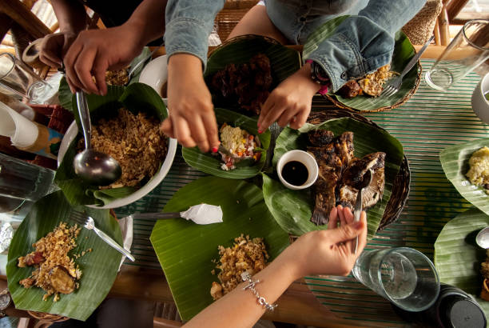

All Time Favorite Filipino Food Recipes

Boodle Fight! A Traditional Way on how Filipinos eat, kamayan style
On this site, we will see the steps on how to cook some of the most common Filipino foods
Adobo
Tinola
Pancit